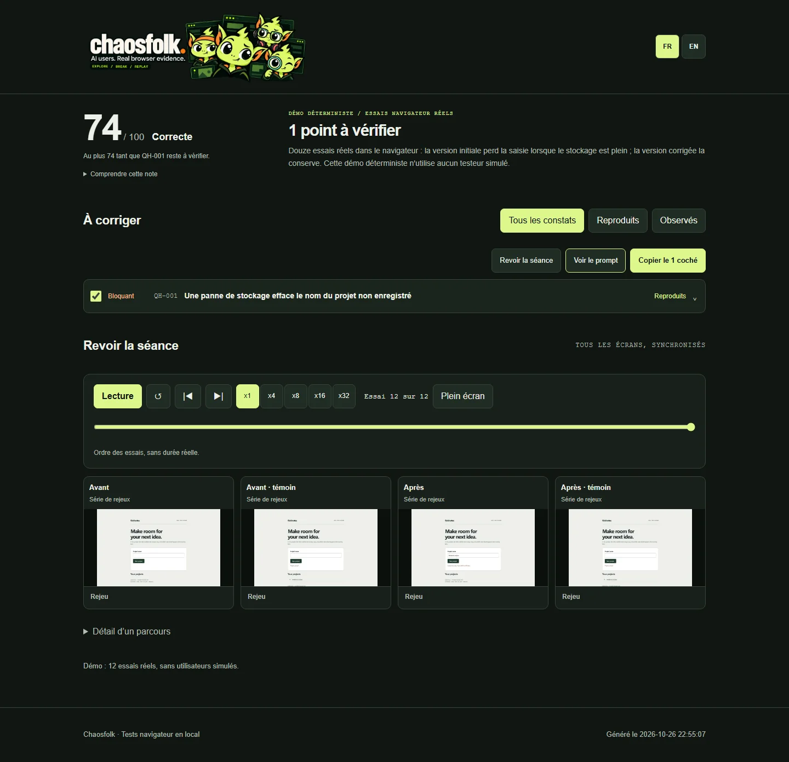

Free Quick audit
Simulated users break your web app in a real browser.
Paste your site's address. Chaosfolk sends a few simulated users with different habits, runs its highest-priority checks and gives you a report with the evidence and a fix prompt for your coding agent.
Waiting in line
Keep this page open, or bookmark it: the address brings you back to this audit.
What the Quick audit does
-
Simulated users explore
Each one has a goal and a behavior profile: in a hurry, keyboard only, on mobile, distracted, unfamiliar with jargon. They drive their own Chromium browser and choose their next action from the page.
-
Priority checks run
The Quick scan selects the highest-priority tests: names in any script, email and phone formats, double submits, interrupted forms, keyboard access and layout at several screen sizes.
-
You get the evidence
A report with findings by severity, screenshots, the expected behavior and a prompt you can paste into your coding agent to fix what you selected.

What the hosted version does not do
- It tests public pages only. It cannot sign in, and local or private addresses are refused.
- It injects no faults: no offline mode, failed requests or damaged storage.
- It runs the Quick depth with a few users. Standard and Deep need your own installation.
- An AI model can be wrong. A finding counts as reproduced only after Chaosfolk replays it and sees it fail again.
Run it yourself, without limits
Install the engine and the skill for your coding agent (Claude Code, Codex, Cursor, Copilot, Gemini CLI, OpenCode, Windsurf). You get every depth, fault injection, signed-in journeys and replays on your own machine.
macOS and Linux
curl -LsSf https://raw.githubusercontent.com/loukan42/chaosfolk/main/install.sh | shWindows (PowerShell)
powershell -ExecutionPolicy ByPass -c "irm https://raw.githubusercontent.com/loukan42/chaosfolk/main/install.ps1 | iex"Then ask your agent: Audit my app with Chaosfolk.
Or fork the repository and host this page yourself.